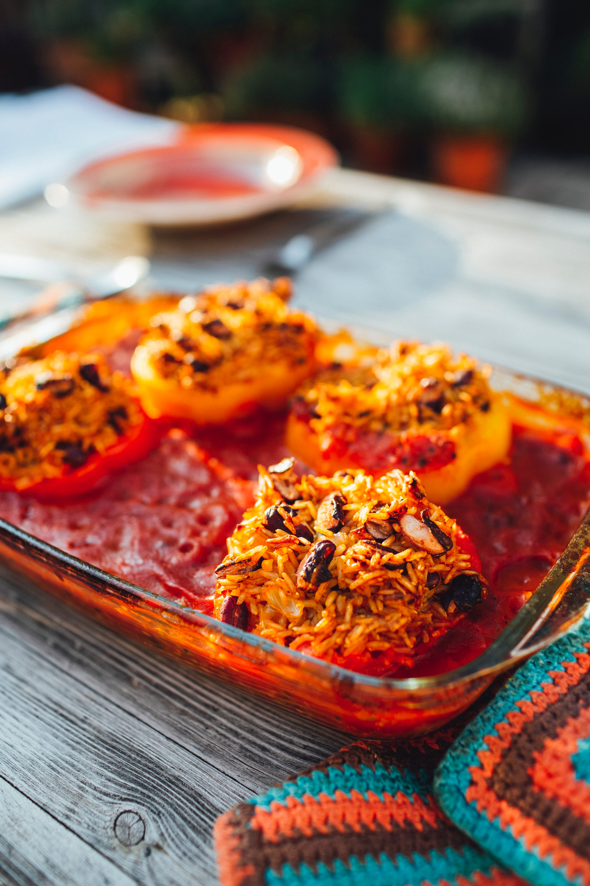

Mexican Rice

Let's get started
This is a rice dish that's fairly easy and quick to make. It's Mexican-style with cheddar cheese in it, for the cheese lovers here.
You could try meat with this, or adjust the amount of cheese for example to your own liking. Just try things out and see what you like best!
Ingredients
- Rice
- Cheddar cheese
- Corn
- Tomatoes
- Red pepper
- Black beans
- Kidney beans
- Fresh coriander
- Fresh limes
Steps
- Cook the rice according to the instructions on the packaging
- Rinse the corn and beans
- Cut the tomatoes and red pepper in little blocks
- Heat all the vegetables and mix it with the cooked rice
- When it's heated, put the cheddar cheese on top
- Serve with fresh coriander and lime